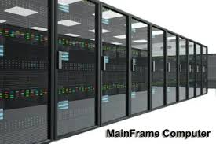
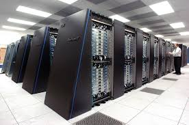
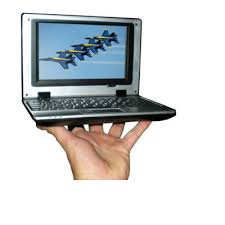
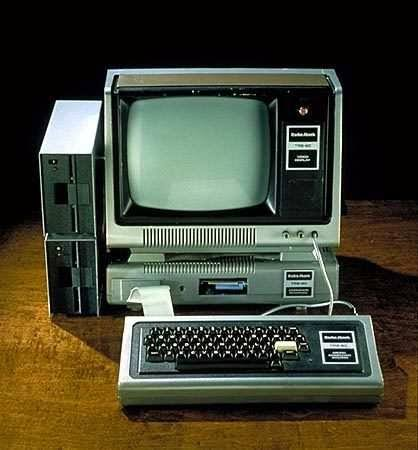

1.Mainframe Computer
A mainframe computer, informally called a mainframe or big iron, is a computer used primarily by large organizations for critical applications like bulk data processing for tasks such as censuses, industry and consumer statistics, enterprise resource planning, and large-scale transaction processing.
To know more about Mainframe computer click on image below
2.Supercomputer
A supercomputer is a computer with a high level of performance as compared to a general-purpose computer. The performance of a supercomputer is commonly measured in floating-point operations per second instead of million instructions per second. Since 2017, there are supercomputers which can perform over 1017FLOPS
To know more about Supercomputer click on image below
3.Minicomputer
Minicomputer, or colloquially mini, is a class of smaller general purpose computers that developed in the mid-1960s and sold for much less than mainframe and mid-size computers from IBM and its direct competitors. In a 1970 survey, The New York Times suggested a consensus definition of a minicomputer as a machine costing less than US$25,000 (equivalent to $167,000 in 2020), with an input-output device such as a teleprinter and at least four thousand words of memory, that is capable of running programs in a higher level language, such as Fortran or BASIC.
To know more about Minicomputer click on image below
4.Microcomputer
A microcomputer is a small, relatively inexpensive computer with a microprocessor as its central processing unit (CPU) It includes a microprocessor, memory and minimal input/output (I/O) circuitry mounted on a single printed circuit board (PCB). Microcomputers became popular in the 1970s and 1980s with the advent of increasingly powerful microprocessors. The predecessors to these computers, mainframes and minicomputers, were comparatively much larger and more expensive (though indeed present-day mainframes such as the IBM System z machines use one or more custom microprocessors as their CPUs). Many microcomputers (when equipped with a keyboard and screen for input and output) are also personal computers (in the generic sense).
To know more about Microcomputer click on image below
